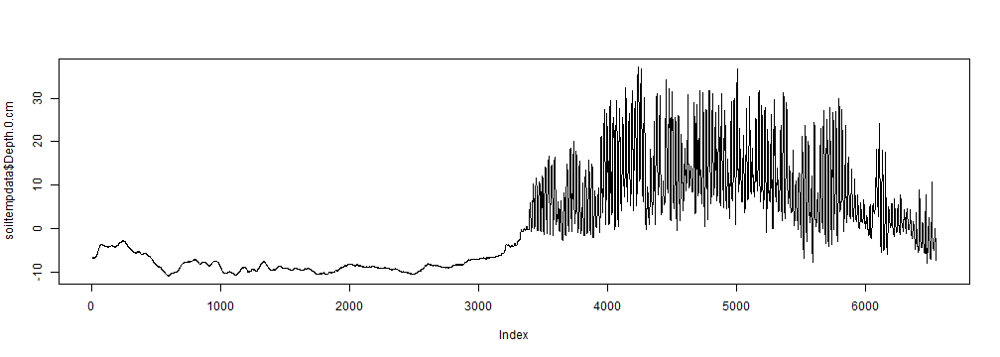

Hopefully by now you've started up RStudio (or your IDE or text editor of choice) and are greeted by a command prompt:

José Padarian and Sebastian Campbell
Hopefully by now you've started up RStudio (or your IDE or text editor of choice) and are greeted by a command prompt:
As is traditional in programming, we'll start off with a Hello world! program. Try the below:
print("Hello world!")
## [1] "Hello world!"
Congratulations! You've taken your first steps into R. You've used the function print to print the text "Hello world!" to the screen. Functions are basically like verbs in language, they tell R to do something. Notice the brackets () after the name of the function in which you can tell the function what to do.
Don't worry too much about the [1] at the beginning, we'll explain that soon. Note that you can also type "Hello world!" without the print command and R will assume you meant to print it.
We can also use R as a calculator for addition and powers:
2 + 2
## [1] 4
2^3
## [1] 8
Note that there are other operators we can use, like * for multiplications, - for subtraction and / for division.
We'll be having a few quizzes like this during this tutorial. No pressure, it's just to check your understanding.
6 / 2?It's 3, because \(\frac{6}{2} = 3\)
So now we can do some maths, but we don't want to have to remember the results every time. So let's store some as variable, so we can refer to them by name. To assign, we can use either the = or <- operator (though <- is recommended).
core_volume <- 100
core_mass <- 180
bulk_density <- core_mass/core_volume
bulk_density
## [1] 1.8
Note that assignment doesn't print the variable to the console.
R doesn't just work with numbers, it can also work with "strings" or characters. Strings are denoted by the quotes ("") surrounding them. We've already used these when we made our "Hello world!" program. In fact, we can use the paste function to stick them together.
paste("The bulk density is:", 1.75, sep = " ")
## [1] "The bulk density is: 1.75"
The paste function sticks strings and numbers together into a single string. The sep argument says: "Put a space between all of the things I'm sticking together".
Let's combine all the things we know so far into something useful. Remember the bulk density we calculated earlier?
paste("The bulk density is:", bulk_density, sep = " ")
## [1] "The bulk density is: 1.8"
Here R evaluated our variable bulk_density and added it to the string we were trying to make.
"1:2:3:x:y:z"The first option. The second option won't work as there's only one string, so R can't place separators between strings. The third option is trying to call variables named x, y and z (but it's likely none exist). Finally, the fourth option is space-separated, not colon-separated.
So we've been dealing with individual strings and numbers, let's move onto combining those into vectors. A vector is basically just a 1-dimensional array of data. Like a set of numbers or a shopping list. It's really easy to make vectors of sequential integers:
1:10
## [1] 1 2 3 4 5 6 7 8 9 10
5:-5
## [1] 5 4 3 2 1 0 -1 -2 -3 -4 -5
You can also make vectors of strings or numbers using the combine (c) function:
c(5, 4, 3, 2, 8)
## [1] 5 4 3 2 8
c("sand", "silt", "clay")
## [1] "sand" "silt" "clay"
But be careful. These kinds of vectors can only take one type of data. If you combine numbers and strings together:
c("SOILID001", 3, 5, "SOILID006", 7)
## [1] "SOILID001" "3" "5" "SOILID006" "7"
Then they all become characters.
If you think about it, you can treat numbers as letters, but it's a lot harder to treat letters as numbers.
But how do I find out about all these functions? There are a few ways of getting help in R:
?print or help(print)RSiteSearch("soil")At the moment, the help files will be fairly hard to get through, but they make more and more sense the more you use R. Some help files will be much simpler than others. If you find the help file impossible to get through, try testing the examples at the bottom of most help files or access them using the examples function.
sep argument of read.csv do?The read.csv function entry found using ?read.csv or help(read.csv) says sep is the 'field separator character'.
Now we're ready to deal with some real data. The University of Alaska Fairbanks has some soil temperature data from 2011. The best function to read in CSVs is read.csv. Let's store that object and call it soiltempdata.
url <- "https://raw.github.com/sebastian-c/r-mar2013/gh-pages/soiltempdata.csv"
soiltempdata <- read.csv(url)
That looks like it went through nicely. No errors, no complaints.
It's a good idea to look at the first few rows of your data, to make sure it went through ok. We'll use head to get the first 4 rows of ours.
head(soiltempdata, 4)
## Error: internal error -3 in R_decompress1
Blech. That's not what we wanted at all. Most of those columns are empty.
What went wrong? Let's download the data and open it up in Excel or Notepad and look at it (ideally, you should do this before trying to read it in). Click here to link to the data (if you're feeling adventurous, try using the download.file function to download it. Be sure to use the mode="wb" option). Save it to your hard drive (put it into My Documents). Then open the CSV file.

Well there's the problem, there's all this other stuff before we get to the actual data.
Set your working directory to where you stored the data. You can use the getwd function to work out what directory you're in and the setwd function to set the working directory. Remember to use forward slashes (/) as the path separator.
getwd()
## [1] "C:/Research/"
setwd("C:/Users/Sebastian/Documents")
getwd()
## [1] "C:/Users/Sebastian/Documents"
Ok, so we had a problem with the data before, let's see if we can read it in properly this time. So the first problem is that we have a few lines before we get to the data. We could remove these manually, but R has a neat trick to sort this problem out, the skip argument in read.csv.
There are 16 lines we have to skip (not 17, we want to keep the headers).
Now after all these problems, we can finally read in the data and store it as an object. We can see it actually has columns we want.
soiltempdata <- read.csv("soiltempdata.csv", skip = 16)
head(soiltempdata, 3)
## Year Month Day Hour Depth.0.cm Depth.5.cm Depth.10.cm Depth.15.cm
## 1 2011 1 1 0 -6.752 -4.940 -5.061 -4.401
## 2 2011 1 1 1 -6.727 -4.916 -5.098 -4.378
## 3 2011 1 1 2 -6.726 -4.916 -5.098 -4.377
## Depth.20.cm Depth.40.cm Depth.60.cm Depth.80.cm Depth.100.cm
## 1 -3.698 -2.014 0.041 -0.215 7777
## 2 -3.733 -1.993 0.010 -0.195 7777
## 3 -3.733 -1.992 0.010 -0.195 7777
## Depth.120.cm Depth.135.cm Depth.150.cm
## 1 -0.525 -0.577 -0.995
## 2 -0.505 -0.608 -1.028
## 3 -0.504 -0.608 -1.027
Another way of examining objects is the str function.
str(soiltempdata)
## 'data.frame': 6552 obs. of 16 variables:
## $ Year : int 2011 2011 2011 2011 2011 2011 2011 2011 2011 2011 ...
## $ Month : int 1 1 1 1 1 1 1 1 1 1 ...
## $ Day : int 1 1 1 1 1 1 1 1 1 1 ...
## $ Hour : int 0 1 2 3 4 5 6 7 8 9 ...
## $ Depth.0.cm : num -6.75 -6.73 -6.73 -6.65 -6.67 ...
## $ Depth.5.cm : num -4.94 -4.92 -4.92 -4.91 -4.86 ...
## $ Depth.10.cm : num -5.06 -5.1 -5.1 -5.03 -5.04 ...
## $ Depth.15.cm : num -4.4 -4.38 -4.38 -4.37 -4.38 ...
## $ Depth.20.cm : num -3.7 -3.73 -3.73 -3.72 -3.68 ...
## $ Depth.40.cm : num -2.01 -1.99 -1.99 -2.04 -2.05 ...
## $ Depth.60.cm : num 0.041 0.01 0.01 0.02 0.004 0.04 0.078 0.071 0.055 0.05 ...
## $ Depth.80.cm : num -0.215 -0.195 -0.195 -0.236 -0.2 -0.165 -0.177 -0.184 -0.201 -0.205 ...
## $ Depth.100.cm: int 7777 7777 7777 7777 7777 7777 7777 7777 7777 7777 ...
## $ Depth.120.cm: num -0.525 -0.505 -0.504 -0.546 -0.51 -0.526 -0.487 -0.494 -0.511 -0.515 ...
## $ Depth.135.cm: num -0.577 -0.608 -0.608 -0.598 -0.614 -0.578 -0.591 -0.598 -0.615 -0.619 ...
## $ Depth.150.cm: num -0.995 -1.028 -1.027 -1.017 -0.98 ...
Something still isn't right. Look at the 100cm depth soil temperature from the previous slide. Note that you can use the $ symbol to subset out individual columns.
str(soiltempdata$Depth.100.cm)
## int [1:6552] 7777 7777 7777 7777 7777 7777 7777 7777 7777 7777 ...
There is no way that there is a soil with a temperature of 7777 degrees celsius. So why is that present? Well, if we reopen the data in Excel or Notepad, we'll see there were two important lines:
So it would seem that anything with these values should be a missing value. Turns out R has a trick for that too. Let's reread in the data again (last time, I promise).
If we look at the help file for read.csv (?read.csv), we see there's an argument called na.strings. We have two things we need to be NA, so we combine them like we did a few slides ago: c(6999, 7777).
soiltempdata <- read.csv("soiltempdata.csv", skip = 16, na.strings = c(6999,
7777))
str(soiltempdata$Depth.100.cm)
## logi [1:6552] NA NA NA NA NA NA ...
And now it's full of NAs (missing values), as it should be.
Summaries of a dataframe's columns can easily be obtained with summary:
summary(soiltempdata)
## Year Month Day Hour
## Min. :2011 Min. :1.00 Min. : 1.0 Min. : 0.00
## 1st Qu.:2011 1st Qu.:3.00 1st Qu.: 8.0 1st Qu.: 5.75
## Median :2011 Median :5.00 Median :16.0 Median :11.50
## Mean :2011 Mean :5.02 Mean :15.7 Mean :11.50
## 3rd Qu.:2011 3rd Qu.:7.00 3rd Qu.:23.0 3rd Qu.:17.25
## Max. :2011 Max. :9.00 Max. :31.0 Max. :23.00
## Depth.0.cm Depth.5.cm Depth.10.cm Depth.15.cm
## Min. :-10.87 Min. :-9.90 Min. :-9.88 Min. :-9.52
## 1st Qu.: -8.70 1st Qu.:-8.24 1st Qu.:-8.32 1st Qu.:-8.04
## Median : -3.79 Median :-2.79 Median :-2.92 Median :-2.58
## Mean : 0.44 Mean : 0.17 Mean :-1.07 Mean :-1.51
## 3rd Qu.: 7.33 3rd Qu.: 6.32 3rd Qu.: 4.49 3rd Qu.: 3.90
## Max. : 37.21 Max. :32.20 Max. :22.02 Max. :14.76
## Depth.20.cm Depth.40.cm Depth.60.cm Depth.80.cm
## Min. :-9.33 Min. :-8.81 Min. :-7.787 Min. :-7.473
## 1st Qu.:-7.86 1st Qu.:-7.51 1st Qu.:-6.435 1st Qu.:-6.212
## Median :-2.28 Median :-1.82 Median :-1.444 Median :-2.009
## Mean :-1.87 Mean :-2.75 Mean :-2.846 Mean :-3.170
## 3rd Qu.: 3.31 3rd Qu.: 1.08 3rd Qu.: 0.199 3rd Qu.:-0.449
## Max. :10.35 Max. : 4.03 Max. : 1.251 Max. :-0.122
## Depth.100.cm Depth.120.cm Depth.135.cm Depth.150.cm
## Mode:logical Min. :-6.935 Min. :-6.709 Min. :-6.90
## NA's:6552 1st Qu.:-5.713 1st Qu.:-5.495 1st Qu.:-5.69
## Median :-2.482 Median :-2.577 Median :-3.04
## Mean :-3.230 Mean :-3.205 Mean :-3.59
## 3rd Qu.:-0.977 3rd Qu.:-1.096 3rd Qu.:-1.63
## Max. :-0.487 Max. :-0.574 Max. :-0.98
We can now do some basic plotting. Let's look at the 0cm depth over time. This is easy using the plot function, given that our data is in order. We'll use the type="l" argument to make it a line plot:
plot(soiltempdata$Depth.0.cm, type = "l")

What if we're only interested in one month? Say we're only interested in January (month 1)?
At the moment the dataset is usable, but is it tidy? To be tidy, a dataset must have the following qualities:
This data has multiple columns for temperature variables. It would be easier to deal with if all temperatures were in the same column. Ideally, we would have a column for date, a column for depth and a column for temperature. This is often called converted from 'wide' format (many columns, few rows) to 'long' format (few columns, many rows).
One of the best ways to rearrange your data is to use the reshape2 packages. You can use the library or the require function to load it.
You may get an error:
library(reshape2)
## Error: there is no package called 'reshape2'
If this happens to you, then reshape2 has not yet been installed. Use install.packages("reshape2") to install it and library(reshape2) to load it.
When you have a bit more R experience, you can make graphs like the following: